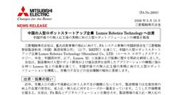
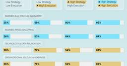
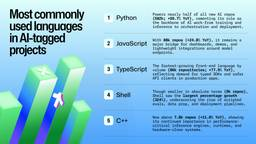
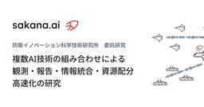
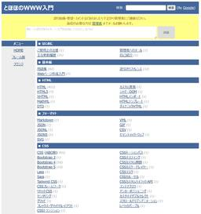
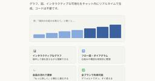
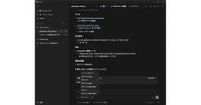

ITmedia AI＋ 最新記事一覧
https://www.itmedia.co.jp/aiplus/
生成AIを中心とするAIのビジネス活用にフォーカス。業務改善や新規事業の応用事例、活用方法、機能比較、ルール整備といった情報を読者に日々届けることで、AI活用をサポートします。
フィード
高市政権、AIロボットで「世界シェア3割」目指す 関連技術への投資を本格化 1
1
ITmedia AI＋ 最新記事一覧
内閣官房はAIロボットを軸とするフィジカルAI分野の官民投資ロードマップ素案を示した。2040年に世界シェア3割超と20兆円市場獲得を目指す。
4時間前
DeNA、「Devin」を全社2000人超に導入 「作業効率6倍」でレガシーコードを刷新 3
ITmedia AI＋ 最新記事一覧
DeNAは自律型AI「Devin」を全社導入し、従業員約2000人が利用する基盤を構築した。開発部門だけでなく営業部門などでも業務効率化を達成したという。
4時間前
データ分析が「30分→5分」に ドコモ法人営業、1億超の会員データを武器に変えた改革の全容 1
ITmedia AI＋ 最新記事一覧
営業現場では「分析する時間がない」「スキルが足りない」といった理由でデータ活用が進まない企業も少なくない。NTTドコモはAIを活用し、1億超の会員データを法人営業の武器に変えようとしている。
5時間前
MCPは死んでない？ MCPの2026年ロードマップ公開 「AIツール接続」から「AI自律連携インフラ」へ 1
ITmedia AI＋ 最新記事一覧
AIと外部ツールをつなぐ規格「MCP（Model Context Protocol）」の2026年ロードマップは、MCPの役割が「単なるツール接続の仕組み」から「AI同士が連携する基盤」へと広がりつつあることを示している。そのポイントを整理し、「MCP vs. CLI」論争についても触れる。
7時間前
Open WebUIと自作MCPツールで「ローカル操作を“安全に”自動化する」方法 1
ITmedia AI＋ 最新記事一覧
気軽に試せるラップトップ環境で、チャットbotを提供するオールインワンの生成AI環境構築から始め、Kubernetesを活用した本格的なGPUクラスタの構築やモデルのファインチューニングまで解説する本連載。今回は、MCPサーバを自作し、日々の作業を効率化、自動化するアプローチを解説します。
7時間前
AIボットの猛攻でソーシャルニュースサイトDiggが再起動2カ月後に「ハードリセット」 23
ITmedia AI＋ 最新記事一覧
ソーシャルニュースサイトのDiggは、サイトを一時停止すると発表した。1月のオープンベータ公開から約2カ月での決断となる。原因はAIボットによる大量のスパム投稿で、人間によるコミュニティの信頼維持が困難になったためとしている。
2日前
AIによるbot通信の8割がクローラー Metaが過半数を占める実態 5
ITmedia AI＋ 最新記事一覧
FastlyはAIによるbot通信の実態を分析したレポートを発表した。通信の約8割をクローラーが占め、Metaが過半を生成していると判明した。高頻度アクセスによるサーバ負荷や、bot識別の難しさが課題となっている。
2日前
ホンダ、慶大・阪大とAI開発の協働研究所 人材育成を加速 2
ITmedia AI＋ 最新記事一覧
本田技研工業は、慶應義塾大学および大阪大学とAI開発で産学連携するプロジェクト「BRIDGE」（ブリッジ）を始めると発表した。
3日前

三菱電機、人型ロボットで工場を無人化へ 中国スタートアップと協業 2
ITmedia AI＋ 最新記事一覧
三菱電機は、人型ロボットを開発するスタートアップの中国Lumos Robotics Technologyに出資し、協業すると発表した。
3日前
“AI養老孟司”が客員教授に就任 本人とともに 東京工科大 1
ITmedia AI＋ 最新記事一覧
東京工科大学は、養老孟司氏と同氏を模したAIアバター「AI養老先生」がともに客員教授に就任したと発表した。
3日前

AIエージェント導入が進む企業は何が違う？ Microsoft、成否を分ける“5要素”を提示 2
ITmedia AI＋ 最新記事一覧
MicrosoftはAIエージェントの導入準備態勢に関する調査結果を公開した。準備が整った企業は未整備企業に比べ、約2.5倍の速さでエージェントを導入できるという。
3日前

急成長上位10位プロジェクトの6割がAI関連 GitHubが分析するAI支援ワークフローの変化 3
ITmedia AI＋ 最新記事一覧
GitHubが年次レポート「Octoverse 2025」に基づく分析記事を公開した。AIプロジェクトを推進する上で開発者が重視する点とツールの選択方法が変化しつつあるという。
3日前

Sakana AI、防衛装備庁から委託研究 部隊の情報分析や意思決定にAI利用へ 2
ITmedia AI＋ 最新記事一覧
Sakana AIは、防衛装備庁からの委託研究を始めると発表した。自律的にタスクをこなすAIエージェント技術により、部隊の情報分析や意思決定の高度化を目指す。
3日前
GoogleマップがGeminiで進化 AIが複雑な質問に答える「Ask Maps」と3Dナビ「Immersive Navigation」 10
ITmedia AI＋ 最新記事一覧
Googleは「Googleマップ」の「Gemini」採用新機能を発表した。会話形式で複雑な条件の場所探しができる「Ask Maps」と、3Dビューで直感的なルート案内を行う「Immersive Navigation」を導入。ユーザーの嗜好や過去の履歴に基づいたパーソナライズ提案や、自然な音声案内により、ナビゲーション体験を再構築する。（日本での提供はまだ）
3日前

「とほほのWWW入門」30年目も更新中 96年開設の個人サイト、CGIからOpenAI APIまでカバー 48
ITmedia AI＋ 最新記事一覧
近年はReactやNext.js、OpneAI APIまで対象を広げ、淡々と更新を続けている。
3日前

Anthropic、「Claude」で表や図のインライン表示をβ公開 無料版でも 4
ITmedia AI＋ 最新記事一覧
Anthropicは、Claudeのチャット回答内で表や図、画像をインライン生成する機能をβ版として導入した。2025年9月に公開された「Imagine with Claude」がベースで、全ユーザーが利用可能。プロンプトに応じてAIが視覚化の必要性を判断する。
3日前
黒船「フィジカルAI」襲来 日本におけるヒューマノイド開発の最適解とは 3
ITmedia AI＋ 最新記事一覧
アールティが、産業技術総合研究所、川田テクノロジーズ、川崎重工業などと共同で「フィジカルAI勉強会」を開催。ヒューマノイドの実用化に必要不可欠な技術としてフィジカルAIという言葉そのものや技術成熟度への認識については混乱が見られる中、今回の勉強会は現時点でのフィジカルAIの捉え方を共有することを目的に開催された。
3日前
Microsoft 365の新プラン「E7」は“AI盛り盛り”で99ドル E5にはない魅力は？ 2
ITmedia AI＋ 最新記事一覧
AIとエージェント運用を統合したMicrosoft 365の新プラン「Microsoft 365 E7」が発表された。Copilotや管理基盤を統合し、業務全般でのAI利用とIT部門による統制を両立する。
3日前
VS Codeの安定版が毎週リリースへ 第1弾のバージョン1.111ではAIエージェント運用を強化 1
ITmedia AI＋ 最新記事一覧
Visual Studio Codeの安定版が毎週リリースへ移行した。その第1弾となるバージョン1.111では、AIエージェントの自律実行や権限管理、デバッグ支援などが強化されている。
3日前

GPT-5.4登場、“やり抜くAI”へ 100万トークンとCodexアプリがもたらす“実務完遂力” 2
ITmedia AI＋ 最新記事一覧
OpenAIの新モデル「GPT-5.4」が登場した。100万トークンの巨大コンテキストやCodexアプリとの連携により、AIが実務タスクを自律的に完遂する能力が大きく強化されている。本稿では、その特徴と実際の使いどころを整理する。
3日前